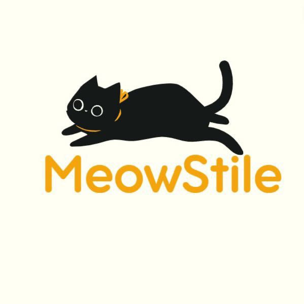

Em um mundo onde a moda é uma poderosa forma de expressão, acreditamos que todos merecem a oportunidade de se vestir bem e se sentir confiantes. Com grande orgulho, apresentamos a "MeowStile", uma iniciativa dedicada a tornar a moda acessível a todas as pessoas, oferecendo peças de alta qualidade a preços justos e inclusivos, além de ajudar a causa animal destinando parte do valor para a ONG "Peludos Unipê".
Nosso e-commerce tem como missão democratizar a moda, promovendo a inclusão e a diversidade. Queremos que cada cliente se sinta especial e valorizado, oferecendo uma variedade de estilos que atendem a diferentes gostos, tamanhos e necessidades. Acreditamos que cada pessoa tem o direito de se expressar através de suas roupas sem se preocupar com barreiras financeiras.
Nossa coleção é cuidadosamente criada para incluir peças essenciais e tendências atuais. Desde roupas casuais para o dia a dia até trajes elegantes para ocasiões especiais, cada item é desenhado com atenção aos detalhes e um compromisso com o conforto e a durabilidade.
Na "MeowStile", acreditamos que cada compra pode fazer a diferença. Parte dos lucros de cada produto vendido é destinada a apoiar o projeto "Peludos Unipê". Juntos, podemos ajudar nossos amigos de quatro patas a encontrar lares amorosos e a receber os cuidados que merecem.
A ONG Peludos Unipê dedica-se ao cuidado de gatos e cachorros abandonados na instituição Unipê. Nossa missão é proporcionar um ambiente seguro e saudável para esses animais enquanto trabalhamos para encontrar lares amorosos para cada um deles. No Peludos Unipê, oferecemos uma gama de cuidados essenciais para garantir o bem-estar dos nossos peludos como:
Castração: Todos os animais resgatados passam pelo processo de castração, ajudando a controlar a população de animais de rua e promovendo uma vida mais saudável para os pets.
Vacinação: Mantemos todos os nossos animais vacinados, garantindo que eles estejam protegidos contra doenças comuns e que estejam prontos para a adoção.
Alimentação: Fornecemos uma alimentação balanceada e nutritiva, adequada às necessidades de cada animal, assegurando que eles se mantenham saudáveis e fortes.
Para contribuir com nossa missão e ajudar os peludos, basta fazer suas compras em nossa loja. Uma porcentagem do valor de cada compra será doada diretamente para a ONG, apoiando os cuidados e o bem-estar dos animais abandonados.